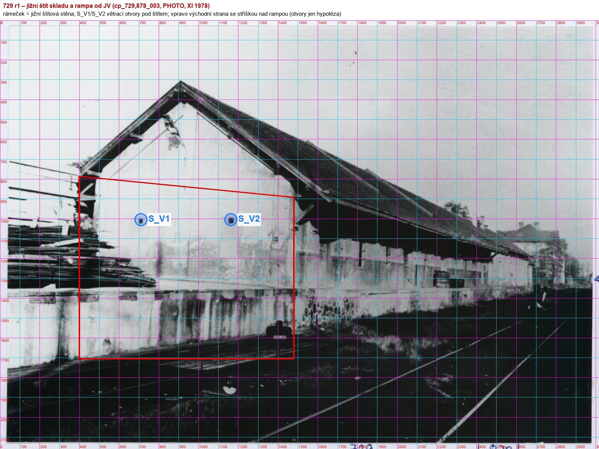
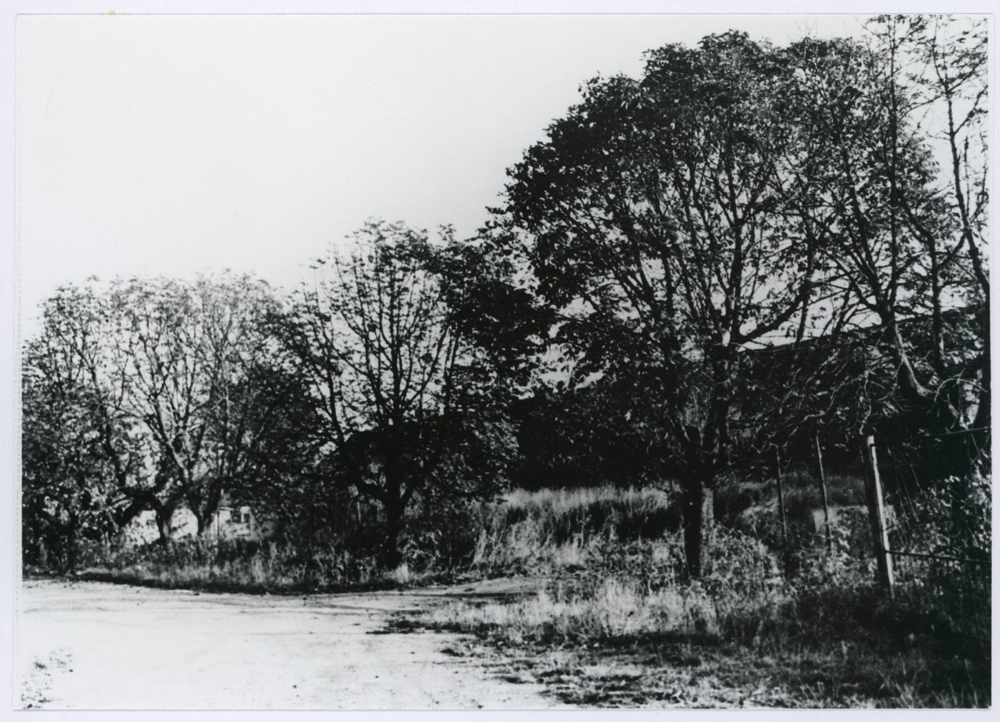
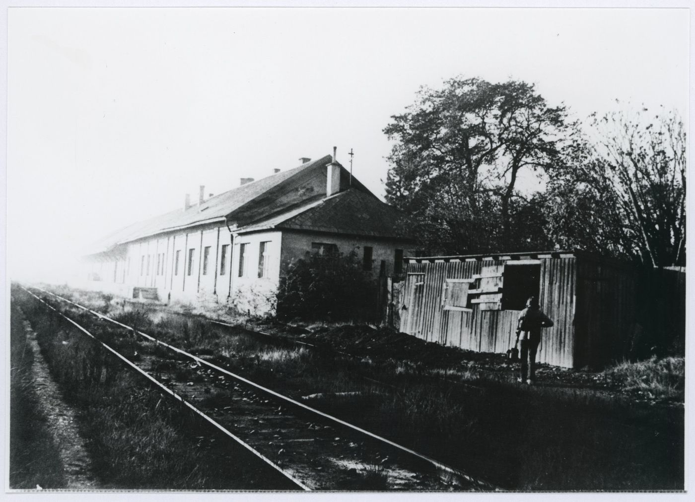
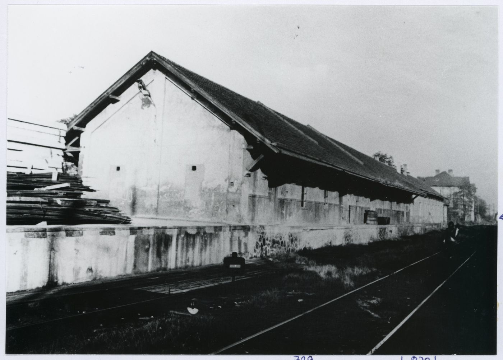
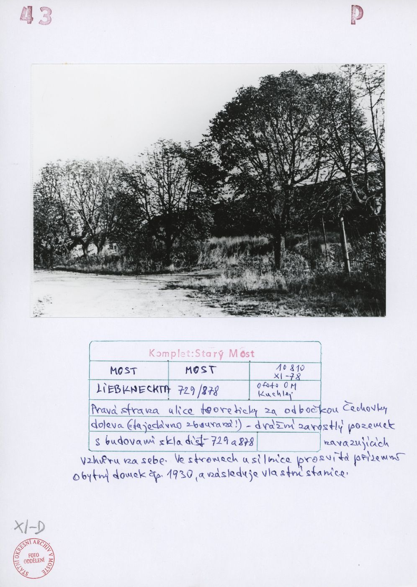
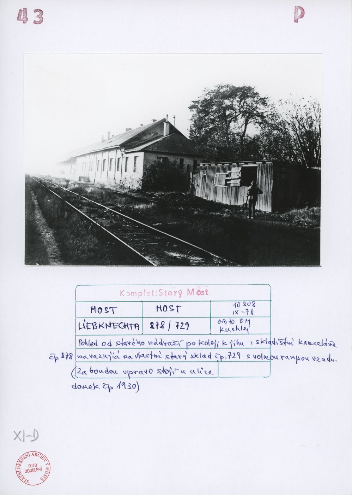
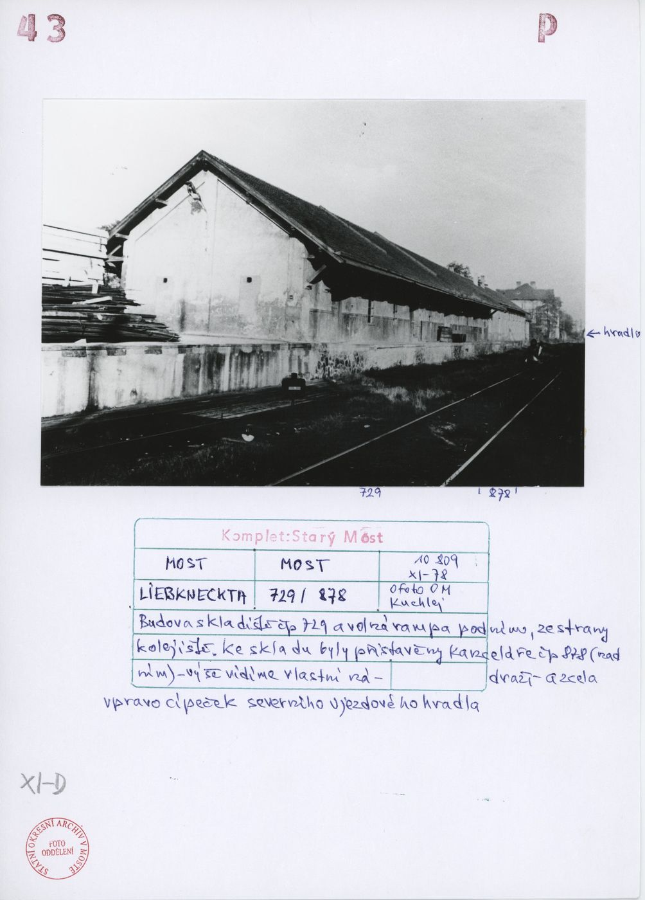
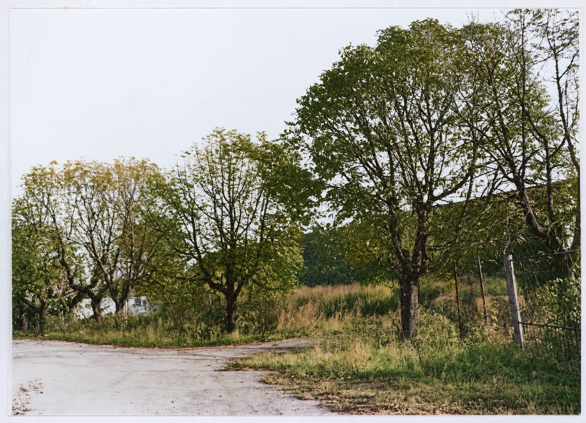
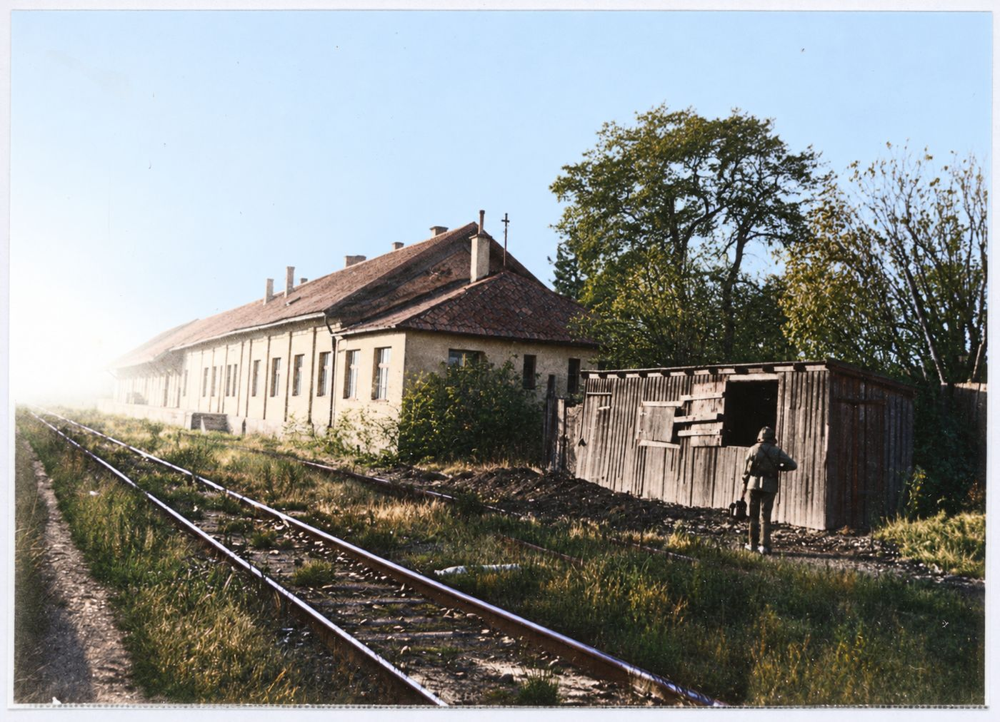
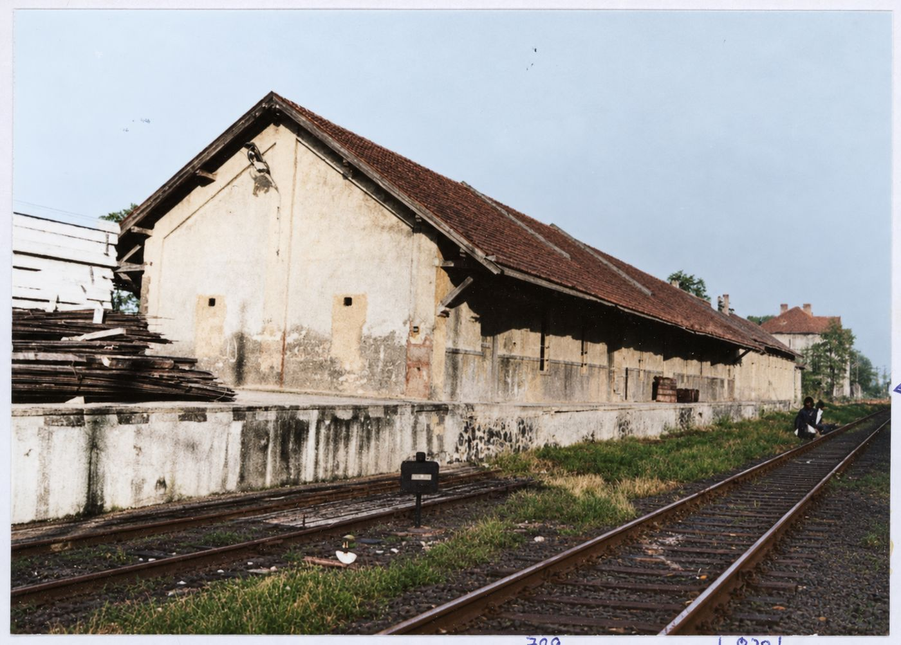

Identita domu
Upozornění – částečně hypotéza: Jen část domu je doložena fotografií; zbytek je odvozen z plánu nebo ze sousedního domu.
Dlouhý přízemní objekt (61 m) s rampou podél kolejí za nádražím; fotografie od kolejiště.
Použité prameny: fotografie cp_729,878_001–003, GIS půdorys.
Kde je dům na pramenech
Dům je v červeném rámečku, každý počítaný otvor nese ID z plánu modelu; sousedé jsou popsáni čísly. U domů jen z projektu je rámeček na výkresu pohledu.


Přílohy v databázi (9)
Všechny přílohy struktury 729 v databázi Libuše, načtené 23. 10. 2026 (jen čtení) a otevřené. Kliknutím otevřete větší náhled.


fotografie
SHA-256 ec56fece4bf9…


fotografie
SHA-256 db265235bcc8…


fotografie
SHA-256 153cbc5b79ba…


archivní karta
SHA-256 e42f5fb6b16c…


archivní karta
SHA-256 95f3b5636c80…


archivní karta
SHA-256 7918e4cbab73…


odvozenina (kolorovaná / FRONT)
SHA-256 a4ebd7aeee89…


odvozenina (kolorovaná / FRONT)
SHA-256 b662a84f4268…


odvozenina (kolorovaná / FRONT)
SHA-256 797874a3c8d1…
Geometrie
Upozornění – částečně hypotéza: Jen část domu je doložena fotografií; zbytek je odvozen z plánu nebo ze sousedního domu.
| Revize geometrie | r1 |
|---|---|
| Poloha | GIS půdorys id 1558 (ulice Rudolfova) |
| Šířka průčelí | 61,26 m |
| Výška okapu | 6,50 m |
| Podlaží | 1 |
| Střecha podle pramenů | sedlová |
| Otvory / vikýře | 22 / 0 |
| Polygonů | 331 |
| Kontrola podkroví a střechy (brána) | prošla: vlasové zásahy 0, nekryté zdivo 0,00 m², střecha nad prázdnem 0,00 m²; fasáda: passed_partial |
Otvory po fasádách (facade_evidence)
| Fasáda | Okna po podlažích | Dveře | Počítané | Hypotéza | Pramen | Poznámka |
|---|---|---|---|---|---|---|
| rear | [] | 0 | 0 | 10 | photo | polohy a počty otvorů hypotéza |
| gable_S | [2] | 0 | 2 | 0 | photo | 2 větrací otvory pod štítem |
| main | [] | 0 | 0 | 10 | photo | polohy a počty otvorů hypotéza |
Kontrolní pohledy


Textury
bez textur (hypotéza – jen prosté materiály)
Až Codex dodá texturovaný model, objeví se v prohlížeči nahoře volba Textury (Codex).
Hypotézy
Upozornění – částečně hypotéza: Jen část domu je doložena fotografií; zbytek je odvozen z plánu nebo ze sousedního domu.
Vše níže je model_hypothesis, provisional, locked: false.
- výška okapu 6,5 m a sklon střechy ~35° odhad (šikmé snímky)
- otvory uliční (západní) strany – žádná fotografie
- vrata a okna k rampě v pravidelném rytmu 6,1 m – odhad
- stříška nad rampou zjednodušena na vodorovnou desku (na snímku pokračuje sklon střechy)
- volná rampa jižně od skladu 8 m – odhad
Soubory
- Geometrie čp. 729, GLB
- Pracovní model: F:\MOST\output\rudolfova_street_claude_2026-10-23\houses\cp729\r1\cp_729_G_r1.blend
- Plán modelu: F:\MOST\output\rudolfova_street_claude_2026-10-23\houses\cp729\geometry_plan.json